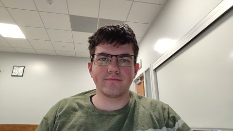

Ethan Gilchrist
I am from Bothell, WA, about 20 minutes north of Seattle. I am the oldest of four children, another of which is attending BYU-I with me. I attended BYU-I as a freshman in 2020 and served a full-time mission from November 2022 to November 2024 in the great Ohio Cincinnati Mission. I am majoring in Computer Science and love astronomy, math, and video games.